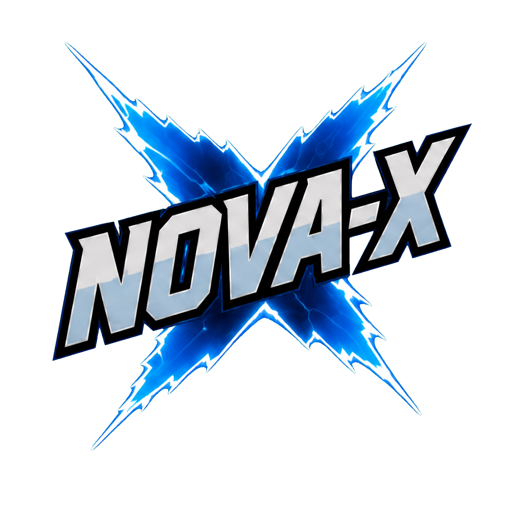
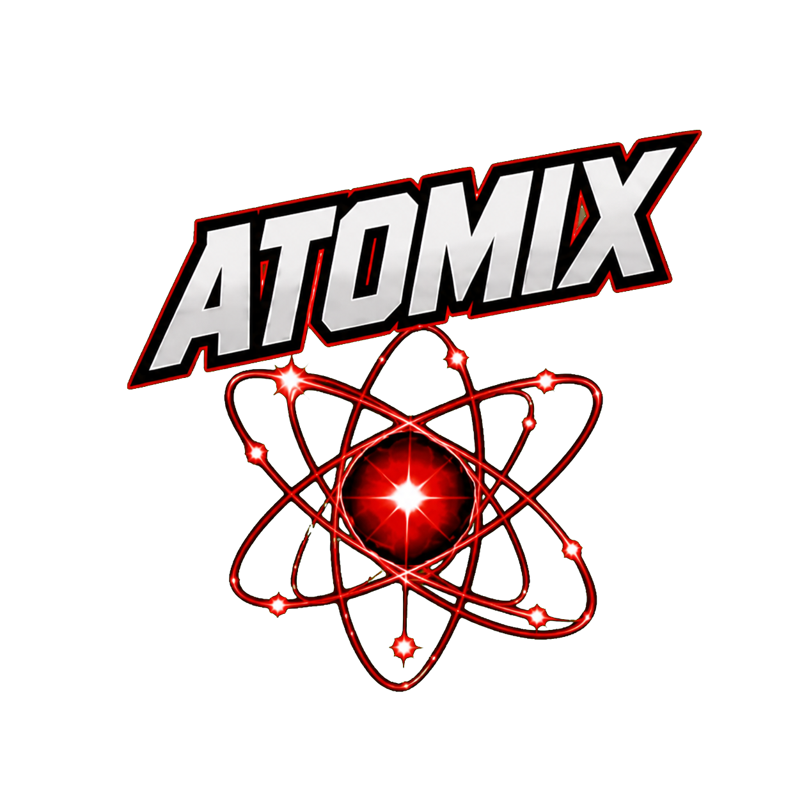
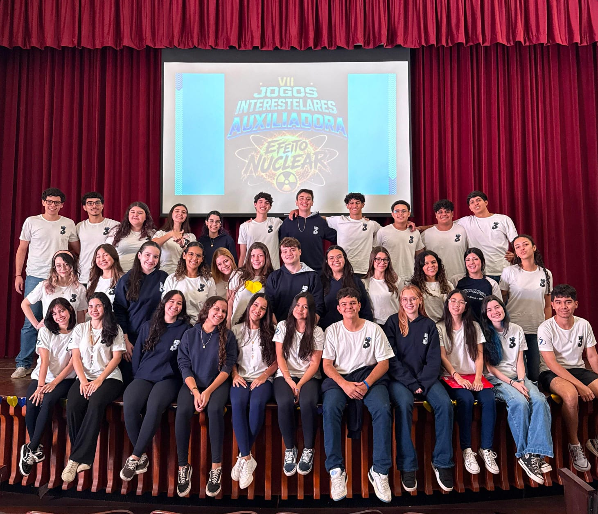

SEMANA 1
O chamado
As equipes são formadas. Cores, símbolos e identidades começam a ganhar vida.
COLÉGIO NOSSA SENHORA AUXILIADORA
Uma jornada de dois meses em que os alunos se dividem em quatro equipes, preparam estratégias, ensaiam, treinam e chegam ao grande dia para enfrentar cinco provas culturais, intelectuais e esportivas.
QUATRO EQUIPES · CINCO PROVAS
Conhecimento, esporte e união


O Interestelar é um evento realizado pelo Colégio Nossa Senhora Auxiliadora, em Campo Grande, no qual os alunos se dividem em quatro equipes para viver uma grande experiência coletiva. Em 2026, elas são Nova-X, Fusion, Atomix e Nexus.
No grande dia, cada equipe encara desafios culturais, intelectuais e esportivos. Mas o que acontece antes é o que transforma uma competição em algo inesquecível.
O Interestelar começa quando a primeira ideia surge, o primeiro grito é ensaiado e cada aluno descobre que faz parte de algo maior.
✦
3º ANO · 2026TERCEIRO ANO
Para o Terceiro Ano, cada momento tem um significado especial. É a oportunidade de encerrar um ciclo construindo algo juntos — com responsabilidade, criatividade e a energia de quem quer deixar sua marca.
Na Nova-X, a turma transforma preparação em memória: são ideias compartilhadas, ensaios, treinos, arrecadação e muito trabalho em equipe.
EQUIPE AZUL · NOVA-X
Entre as quatro forças dos Jogos Interestelares, a Nova-X é a nossa equipe. Seu raio azul representa intensidade, movimento e a união de talentos diferentes em uma mesma direção.
Durante os dois meses de preparação, cada integrante contribui nos ensaios, treinos, estratégias e desafios. Mais que competir, a Nova-X transforma participação em pertencimento.
A preparação é parte da experiência. Cada etapa aproxima a equipe, revela talentos e constrói a energia que toma conta do colégio.
As equipes são formadas. Cores, símbolos e identidades começam a ganhar vida.
Ensaios, treinos, estratégia e muita colaboração. Cada pessoa encontra seu papel.
Todo o esforço entra em órbita. É hora de viver cada desafio intensamente.
Diferentes habilidades entram em jogo. No Interestelar, toda forma de talento tem espaço para brilhar.
Expressão corporal, criatividade e trabalho em equipe.
Uma prova teatral em que cada time recebe uma obra literária para trabalhar.
↗Estratégia para encontrar respostas sob pressão.
↗Curiosidade e repertório de todo o time.
↗Uma gincana com desafios que exigem agilidade, cooperação e estratégia da equipe.
↗Provas de esportes físicos, com técnica, resistência e espírito esportivo.
↗Além das provas, os times se mobilizam para arrecadar alimentos e montar cestas básicas. Cada doação soma pontos, mas o resultado mais importante é o impacto gerado para famílias da nossa comunidade.
Escaneie o QR Code ou utilize a chave Pix. Toda contribuição será convertida em alimentos para a arrecadação.
Adquira números da rifa com a equipe Nova-X. O valor arrecadado ajuda diretamente na compra dos itens das cestas básicas.
Informações de Pix, responsável, valor, prêmio e data serão inseridas assim que forem confirmadas.
Para ajudar na montagem das cestas básicas, estamos recebendo os itens abaixo nas embalagens e quantidades indicadas.
✦ Cada item doado nos aproxima da meta de superar 10 toneladas.